Welkom op deze website over 'Park 1943: The AR-Game'!
Op deze website kan je het volgende lezen over de game:
De opdracht: waarom is deze game gemaakt?
Het onderzoek: hoe is het idee voor deze game ontstaan?
Het prototype: hoe zag het prototype eruit?
De AR-Game zelf: hoe gaat het met de game zelf?
De poster
Aan de linkerkant is de poster te zien van 'Park 1943: The AR-Game'!
Op deze poster kan je zien hoe de game er ongeveer uit gaat zien, nadat deze af is!
De opdracht
Bij het vak CLE (Contextual Learning Environment) werd de opdracht gegeven om een gedeelte van Rotterdam
inclusiever te maken door middel van een applicatie, robot of iets dergelijks.
Ik kreeg met mijn groepje de locatie 'Park 1943'. Wij moesten er dus voor gaan zorgen dat dit park
inclusiever wordt. Met inclusiever wordt bedoeld dat er niemand wordt uitgesloten. Met uitgesloten kan
worden bedoeld dat mensen worden gediscrimineerd, maar ook dat iets moeilijk te bereiken is voor mensen
in een rolstoel of dat er geen bezigheden zijn voor kinderen, waardoor ze niets te doen hebben op deze
plaats.
Onze taak was dus om 'Park 1943' inclusiever te maken met een applicatie (of iets dergelijks) voor een
bepaalde doelgroep. Deze doelgroep moesten wij nog zelf bepalen. Dit hebben we gedaan door middel van
het onderzoek, wat in het volgende kopje wordt besproken.
We begonnen ons onderzoek door naar het park te gaan. Daar gingen we kijken wat er allemaal in het park
was en of het druk of rustig was. Het viel ons al meteen op dat het in Park 1943 erg rustig was. Er liep
of fietste een enkeling door het park heen en er zaten een paar (oudere) mensen op een bankje. Verder was
er een klas van een van de omliggende basisscholen aanwezig in het park.
In het park zijn er wel wat bezigheden. Zo heb je een speeltuin, maar deze blijkt veel gesloten te zijn.
Ook is er een voetbalveld in het park, maar er was niemand aan het voetballen op het moment dat wij
daar waren:
Verder is er in het park ook een podium. Dit podium wordt alleen nooit gebruikt volgens de mensen die
bij het park in de buurt wonen:
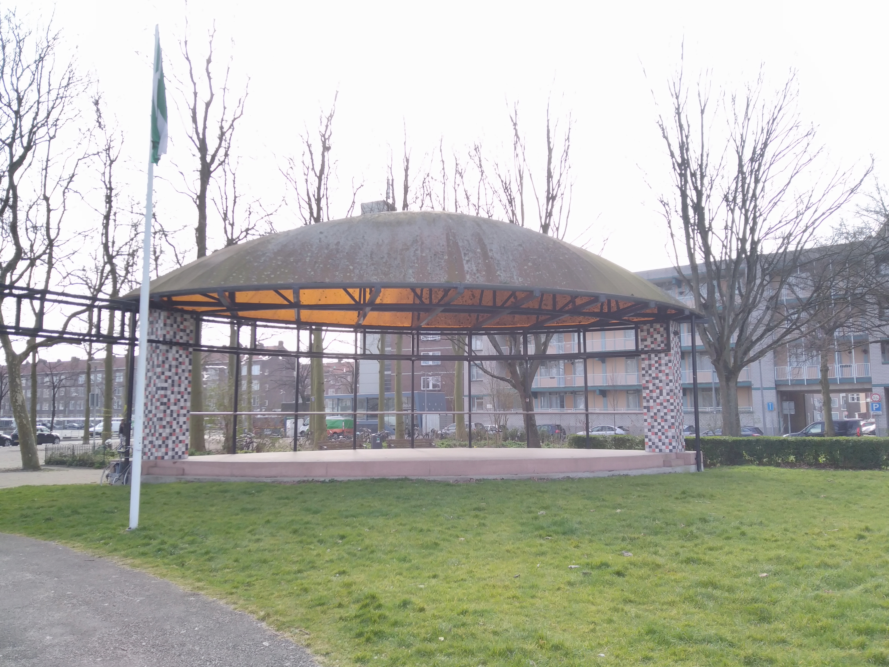
Er is in het park ook een monument, Het Vergeten Bombardement:
Dit monument staat hier om het vergissingsbombardement van 1943 te herdenken. Dit bombardement vond plaats
op 31 maart 1943. Groot-Brittannië wilde de haveninstallaties van Rotterdam bombarderen om zo de Duitsers
te dwarsbomen. Door het slechte weer op die dag werd de navigatie van de bombardementen bemoeilijkt,
waardoor de bommen niet op de haveninstallaties vielen, maar op de Rotterdamse woonwijk Tussendijken.
Er vielen in het totaal 70 zware bommen neer in Tussendijken. Deze bommen hadden een enorme ravage
veroorzaakt. Er waren uiteindelijk zo een 326 doden en 400 gewonden. In het totaal was er 18 hectare aan
grond verwoest. Om deze ruimte op te vullen, werd er na de oorlog een park aangelegd, 'Park 1943'. Het
monument werd op 31 maart 1993 onthuld door voormalig premier Lubbers.
Online onderzoek
Nadat we fysiek langs het park waren gegaan, hebben we ook nog online onderzoek naar het park gedaan.
Zo hebben bijvoorbeeld de informatie over de geschiedenis van het park gevonden. Ook hebben we zo kunnen
ontdekken welke mensen voornamelijk in het park komen en wie er omheen wonen. Ook hebben we onderzoek
gedaan naar wat er allemaal rondom het park ligt qua supermarkten, restaurants, enzovoorts.
Interview
Na het onderzoeken, zijn we aan de slag gegaan met het opstellen van interviewvragen, die we aan
bezoekers van het park konden gaan stellen. Na het opstellen van de vragen zijn we een andere dag
teruggegaan naar het park om mensen te interviewen.
Door het interview zijn we erachter gekomen dat er in het park niet veel te doen is voor jongeren. Voor
hen is er eigenlijk alleen het voetbalveld. Daarnaast worden jongeren al snel gezien als hangjongeren wat
ze natuurlijk niet allemaal zijn. Ook kwamen wij erachter dat veel mensen eigenlijk weinig of niets weten
over de geschiedenis van het park.
Brainstorm
Na het fysieke en online onderzoek en een aantal interviews, zijn wij gaan brainstormen over concepten.
Met de hoofdvraag Wat kunnen wij maken om Park 1943 inclusiever te maken? hebben wij vier keer
een brainstorm uitgevoerd, waardoor we een stuk of 120 verschillende concepten hadden. Deze concepten
hebben we in COCD-boxen gezet. Hieronder staat de COCD-box die ik heb gemaakt aan de hand van de concepten
die uit mijn brainstorm waren gekomen;
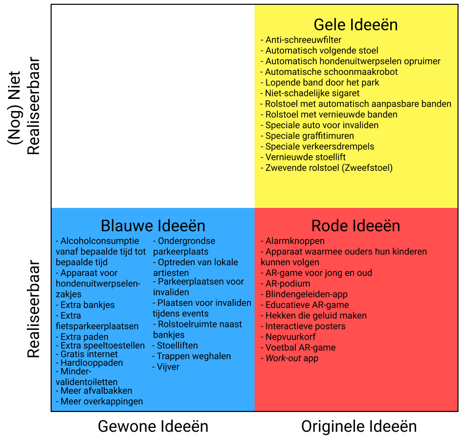
Nadat iedereen een COCD-box had gemaakt, gingen we een concept uitkiezen om uit te gaan werken. We hebben
uiteindelijk gekozen voor 'een educatieve AR-game'. Hiervoor hebben we gekozen, omdat we met dit concept
hopelijk jongeren aanspreken. Er is namelijk weinig te doen in het park voor jongeren, dus komen ze niet
naar dit park toe. Jongeren houden van games, dus hopelijk worden zij aangesproken door een AR-game.
Daarnaast hebben we deze game een educatieve toon gegeven, omdat weinig mensen de historie van Park 1943
weten. Zo leren de jongeren er ook nog wat van!
Het prototype
Testopzet
Na een doelgroep en concept te hebben gekozen, gingen we aan de slag met het prototype. Voordat we aan
de slag konden met het bouwen van het prototype, moesten we eerst nadenken wat we precies met ons prototype
wilden testen. Daarom moest elk groepslid een testopzet opzetten. Hieronder is mijn testopzet te vinden:
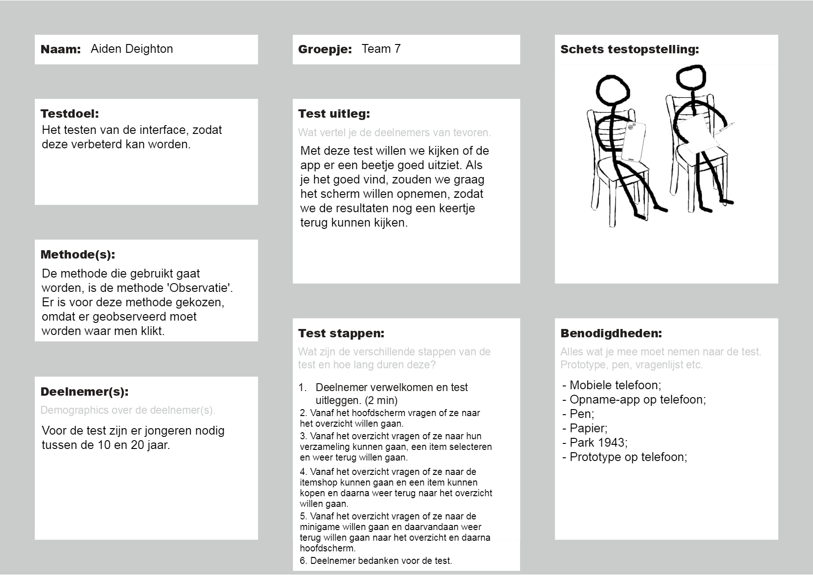
Ik ging de interface testen. Dat betekende dat ik in het prototype de op elke pagina de tekst en knoppen
moest maken en deze moest ik daarna testen. Met het testen bedoel ik: kijken of alles op de goede plaats
staat én of alles duidelijk is.
Prototype
Hierna ben ik aan de slag gegaan met het bouwen van het prototype. Hier volgen de pagina's die ik
gemaakt heb:
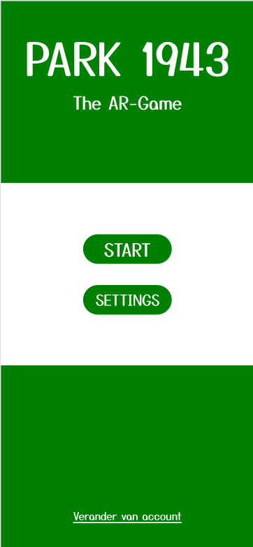
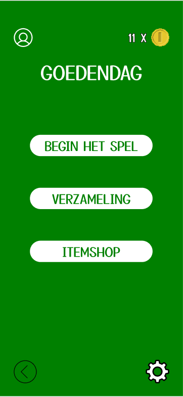
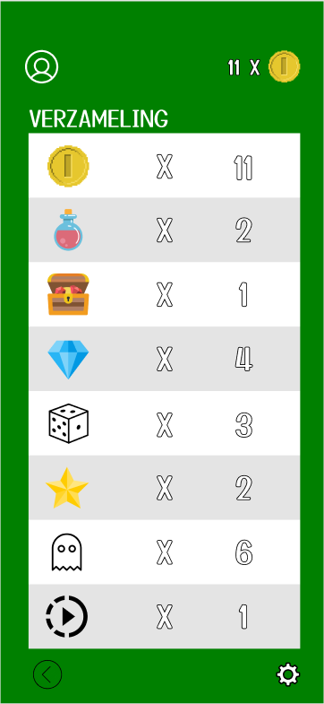
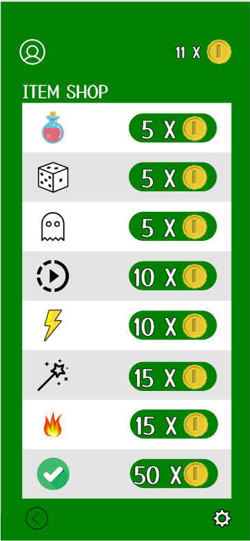
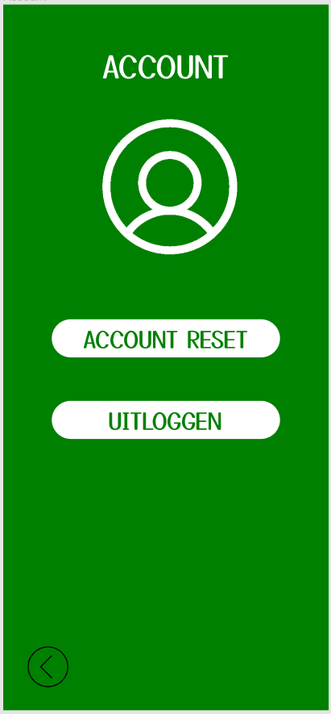
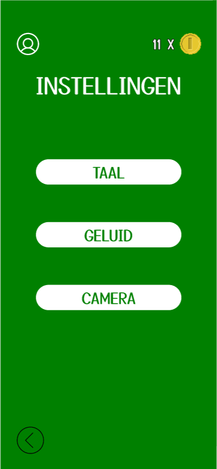
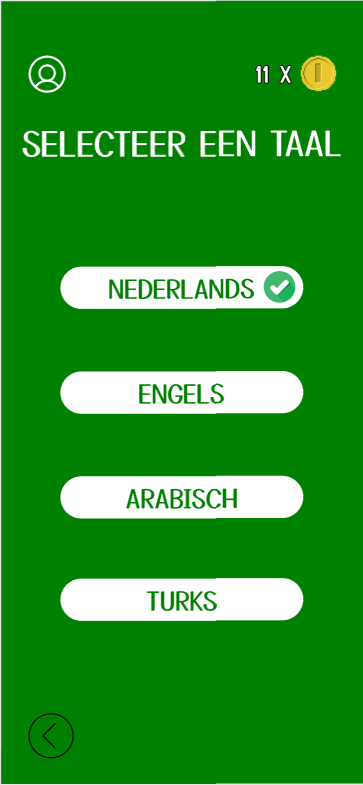
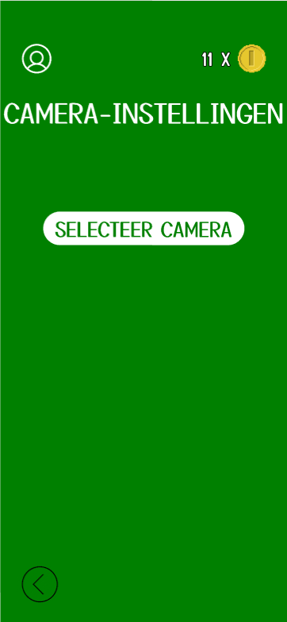
Deze pagina's en de pagina's van mijn groepsgenoot hebben we allemaal aan elkaar gelinkt:
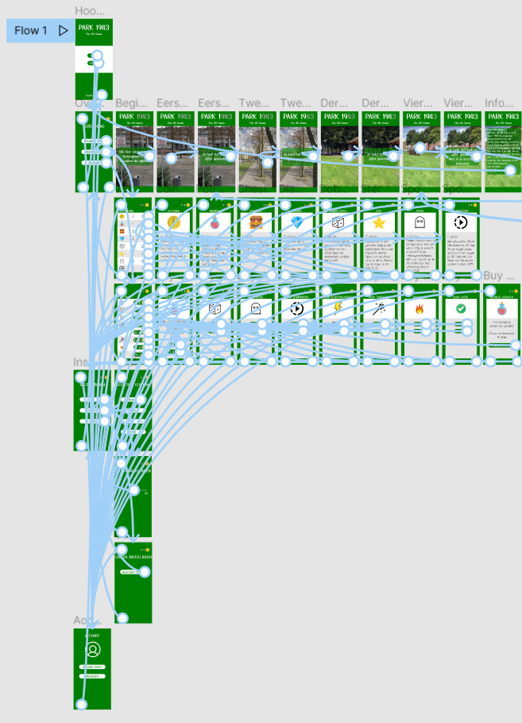
Doordat alles aan elkaar gelinkt is, kan je ook echt op alle knopjes klikken!
Testen
Toen het prototype gemaakt was, gingen we deze testen. Met de testen wilden wij achterhalen of ons
prototype verbeteringen nodig had en zo ja, welke. We hebben uiteindelijk drie keer getest met
verschillende personen. Twee testen hebben we gedaan met twee medestudenten van onze opleiding. Ook
hebben wij een test gedaan met iemand in het park zelf. De opname van deze test, staat hieronder:
Door de testen zijn we achter de volgende zaken gekomen:
De terug knop is moeilijk te zien; deze kan beter een andere kleur worden.
In de itemshop moet ook een beschrijving komen van het item.
In het overzichtsscherm moet de knop op de knop staan en niet op de tekst.
Wanneer een item is gekocht, is een conformatie handig; dus een scherm dat aangeeft dat je iets
hebt gekocht.
Op het taalinstellingenscherm stonden alle verschillende talen in het Nederlands, waardoor mensen
die andere talen spreken niet de juiste taal kunnen selecteren.
Tweede iteratie
Deze verbeterpunten hebben we doorgezet naar een tweede iteratie van het prototype. Ik heb de pagina's
die ik had gemaakt, verbeterd aan de hand van de verbeterpunten. De vernieuwde pagina's zien er als
volgt uit:
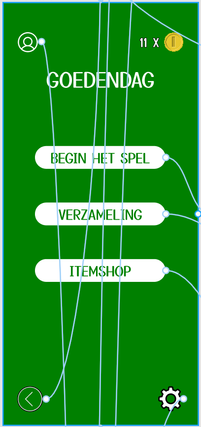
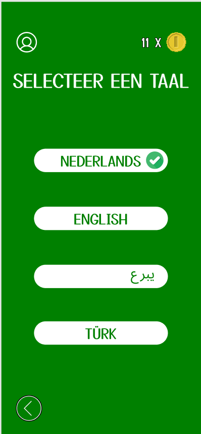
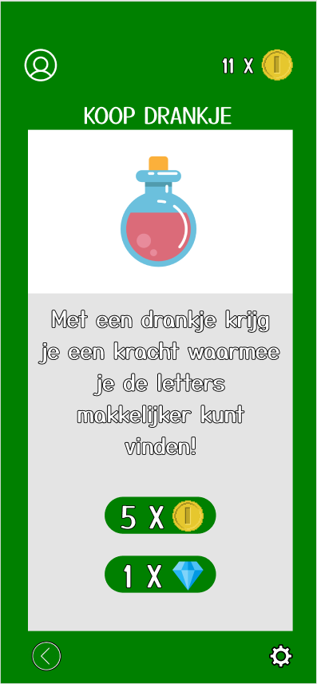
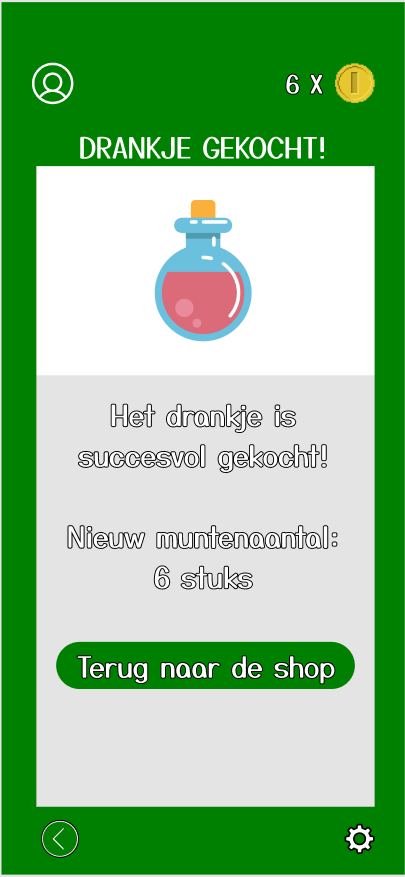
Dit nieuwe prototype is nog niet getest.
De ar-game
Er wordt momenteel nog niet aan de echte AR-game gewerkt. Voordat dit kan, moet eerst de tweede iteratie
van het prototype worden getest en eventueel een derde en een vierde. Daarna moet er nog veel gebeuren
om deze game echt te kunnen maken. Zodra er ontwikkelingen zijn over het maken van de game, komen deze
hier op deze website te staan. Dus mocht je interesse hebben, houdt deze pagina dan in de gaten!


 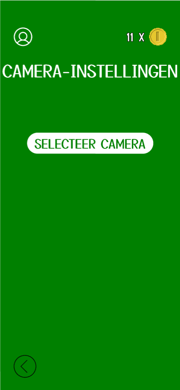
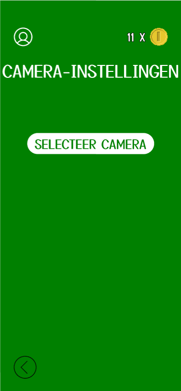
 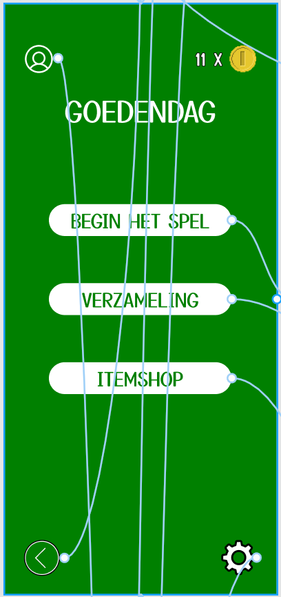
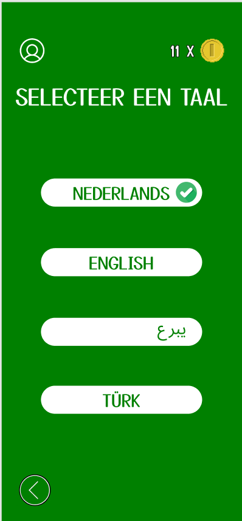
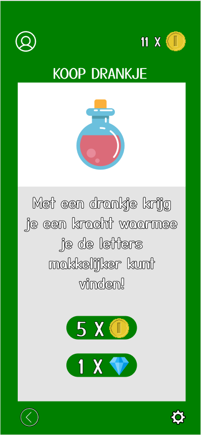
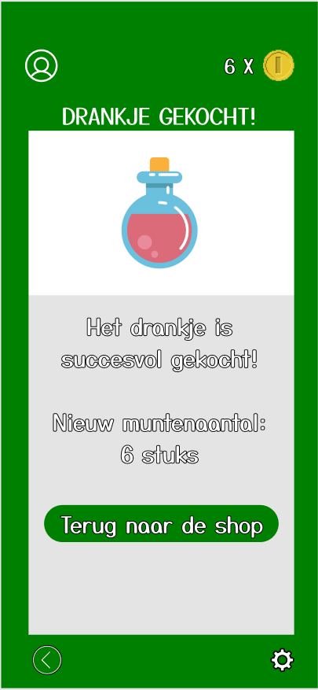
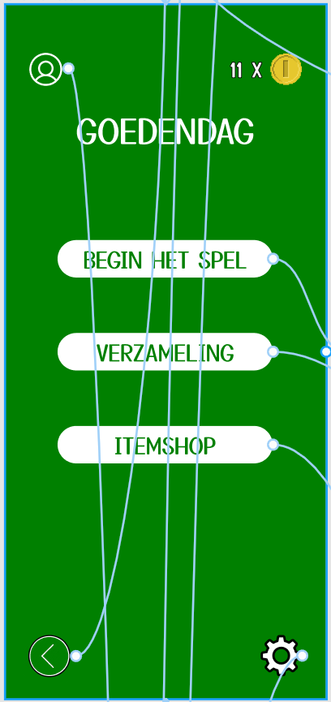
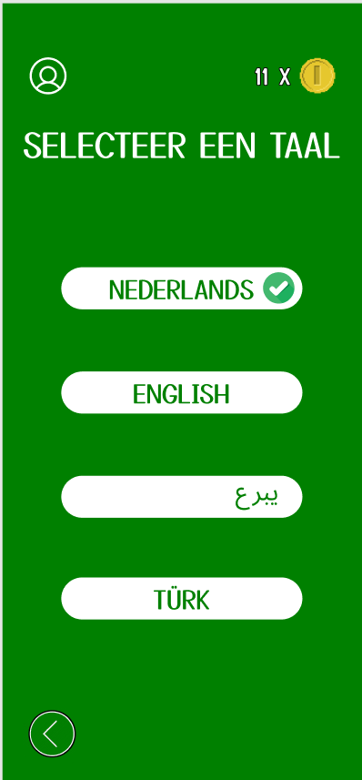
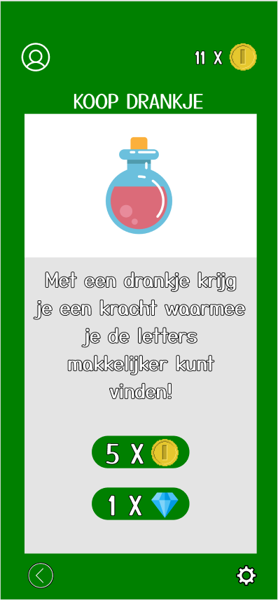
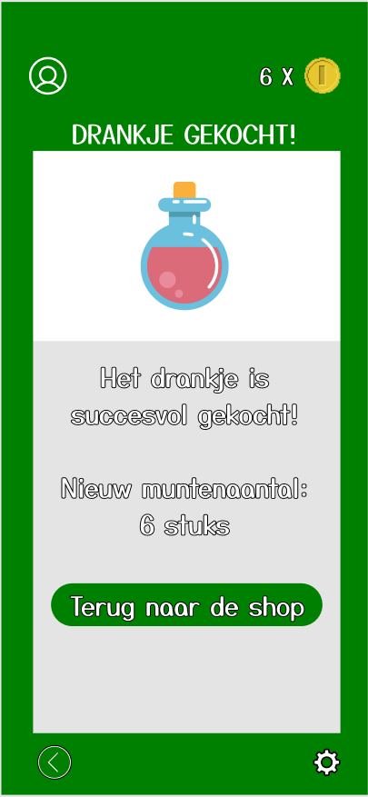